2.1 VMware17 Pro虚拟机安装教程
为什么使用虚拟机
相比双系统或实体机，虚拟机具备以下优势：
- 不影响原有 Windows 系统
- 环境统一，方便教学与排错
- 出问题可随时删除重装
VMware17 Pro安装包下载
提示： 若各位着急或是只想学ROS，推荐直接使用课程提供的安装包； 官网下载流程较长，仅作为补充说明。
推荐从broadcom官方网站下载，确保获取正版安装程序。
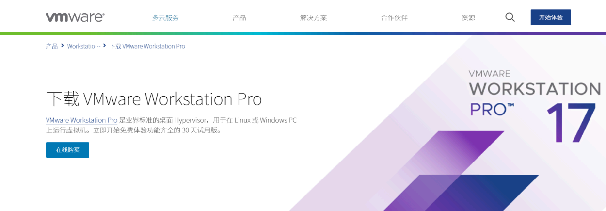
或者可以下载我们预留好的VMware 17.5版本，链接如下：
百度网盘：链接: https://pan.baidu.com/s/1eTJkIJ12U7XawNXxF8ijug?pwd=6711 提取码: 6711
以下将以 VMware 官网 为例，介绍 VMware 的下载与安装流程。
在浏览器中打开
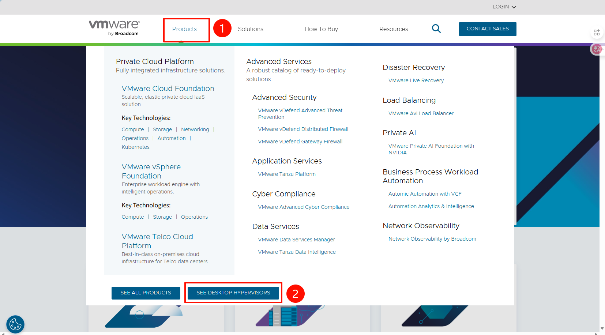
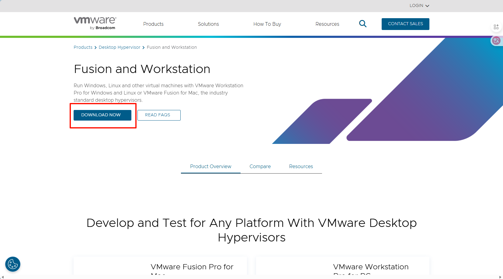
网站需要登陆，所以我们先进行注册
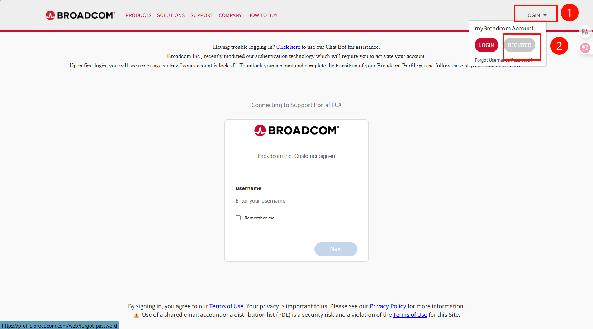
输入自己的邮箱进行注册
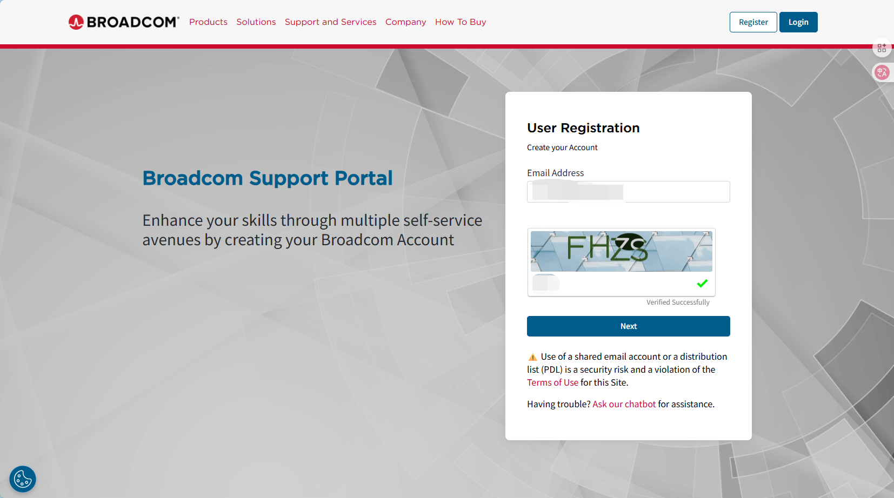
输入邮箱收到的验证码
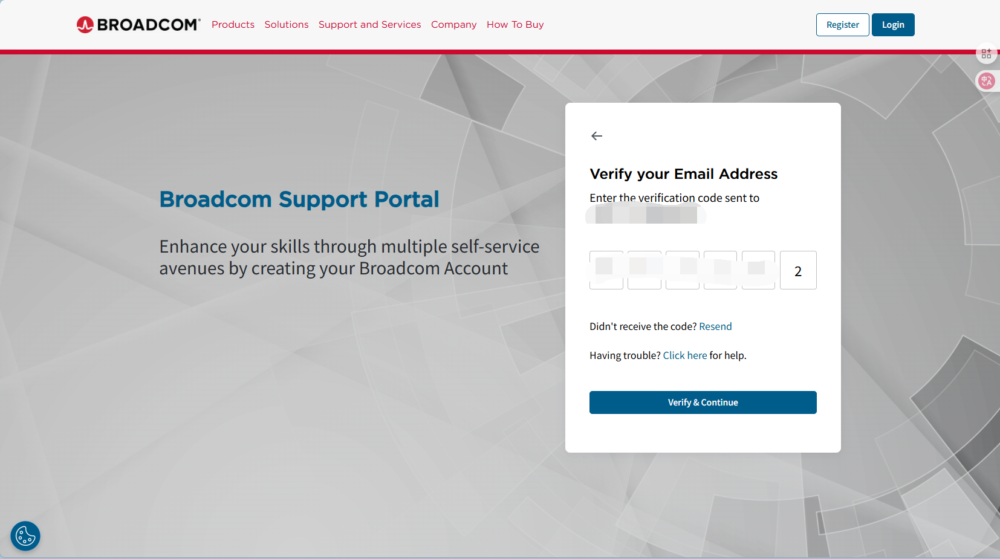
完成后，返回登陆界面输入账号（邮箱）与密码即可
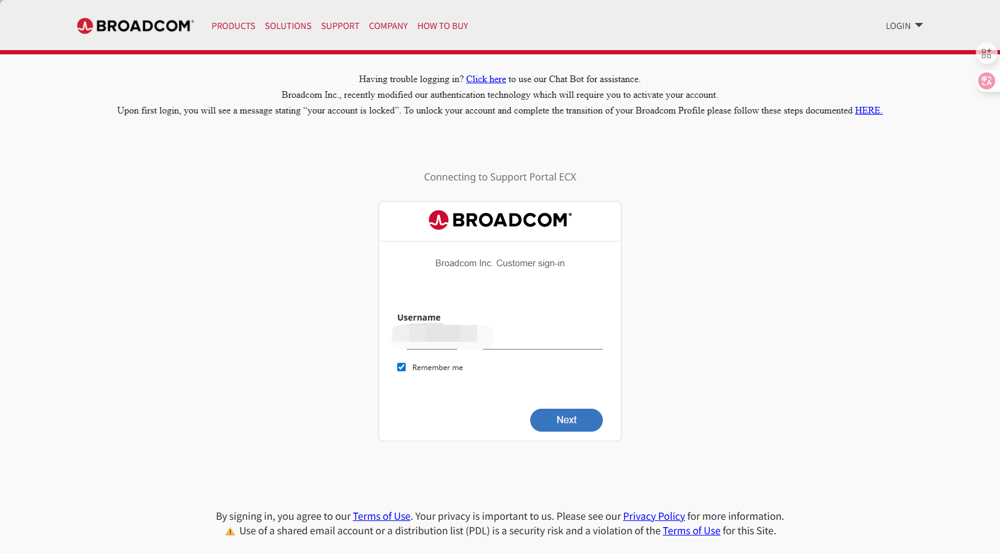
依次点击以下按钮
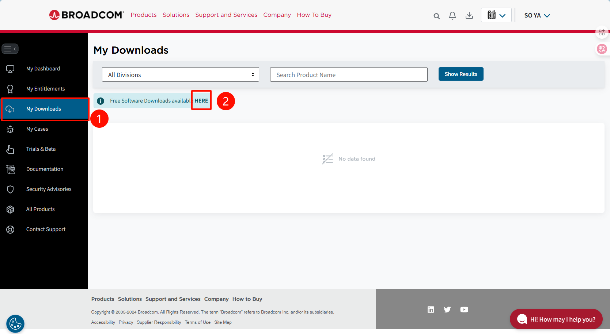
接着在搜索框中输入VMware workstation
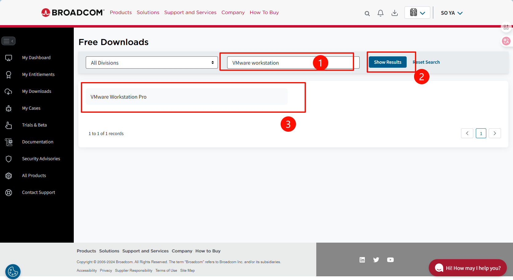
下载当前最新版即可
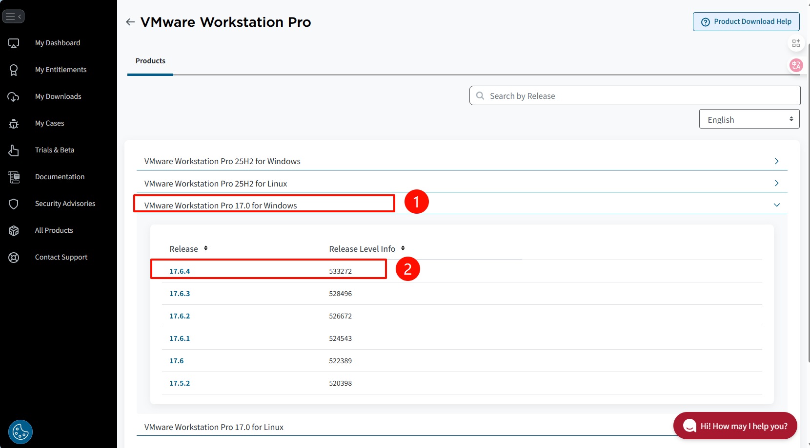
先阅读Terms and Conditions，再勾选
点击右侧按钮即可开始下载
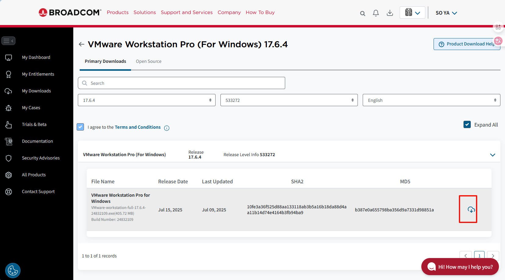
需要填一些地区之类的，随意写就好，填写完之后点击submit,等待跳转
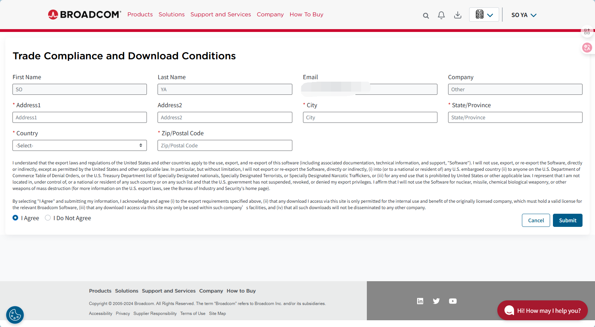
跳转完之后再次点击右侧按钮即可开始下载
等待安装，记住安装包的位置~
安装VMware
先找一个磁盘空间比较充裕的盘，然后首先创建一个文件夹 VMware
建好 VMware 大的目录后，我们还需要在这个目录下创建 安装目录-VMware和之后创建虚拟机的存放目录-VMwaredate
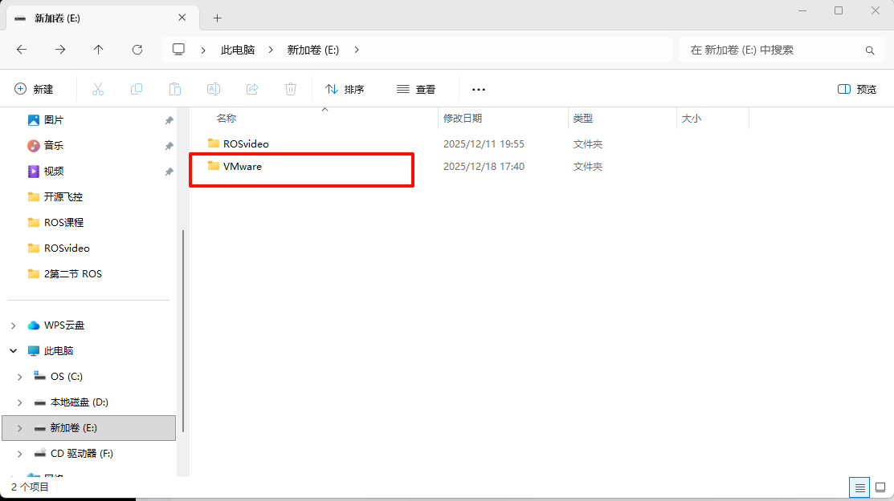
将我们上一节下载好VMware安装程序，以管理员身份运行：
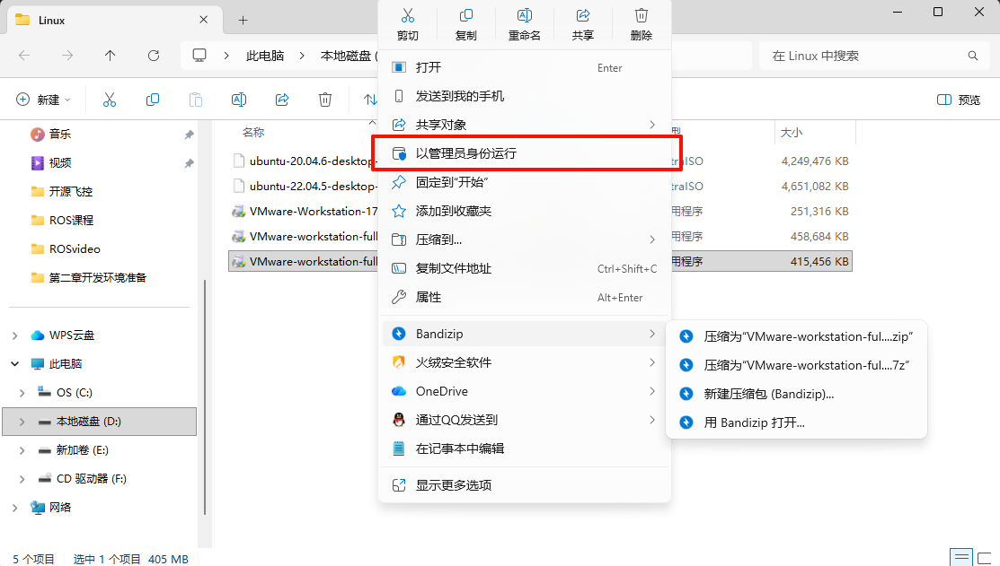
点完 是 以后这里需要稍微等待一会，才会显示安装界面：
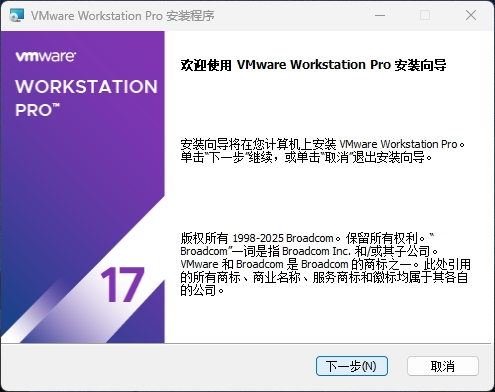
接收许可协议以后，点击 下一步：
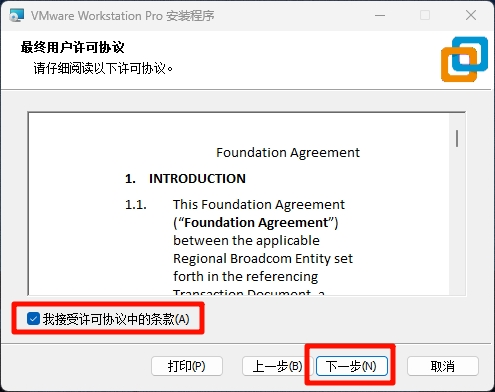
这里一定要点击 更改...，来更改安装位置，前文设置好的文件夹，选择我们刚刚创建的VMware的安装目录，然后点击确定：。
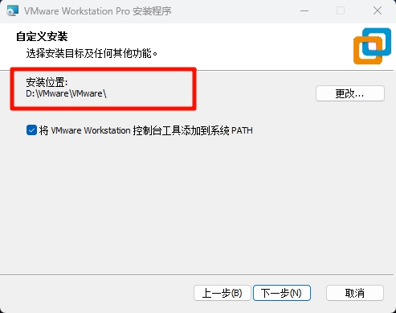
如果出现这个弹窗直接点 确定，如果没有出现直接跳过这一步。
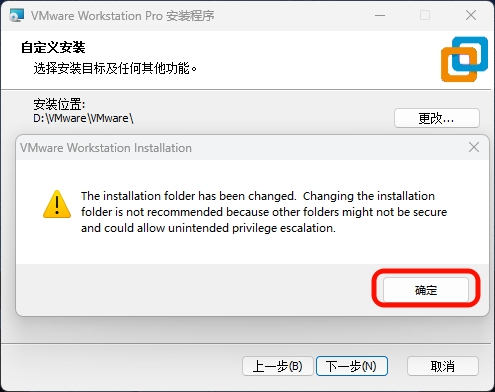
将 启动时检查产品更新 和 加入 VMware 客户体验提升计划取消勾选，然后点击下一步：
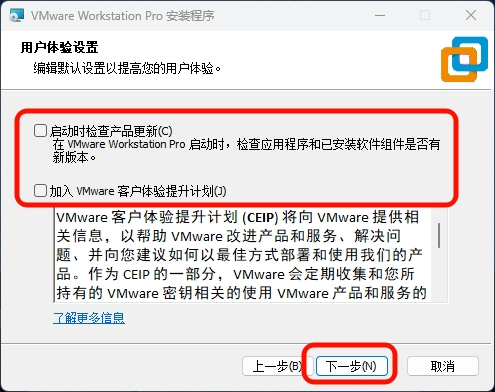
创建快捷方式，以方便寻找，并开始安装。
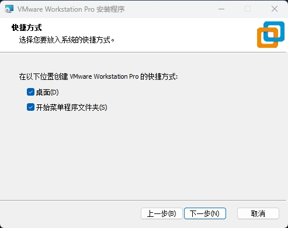
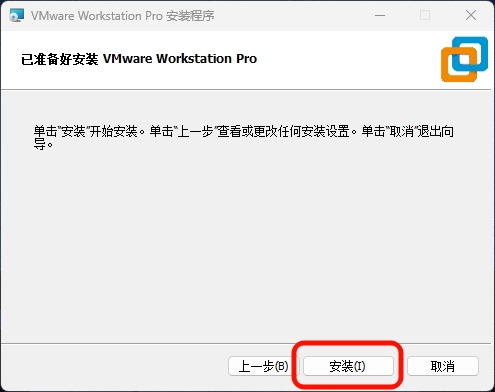
等待进度条跑完，安装完成：
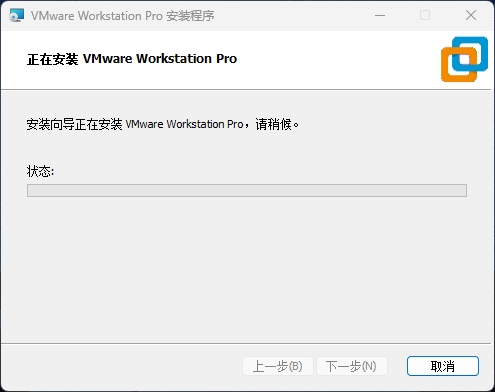
安装完成后会显示下面这个界面，直接点 完成 即可：
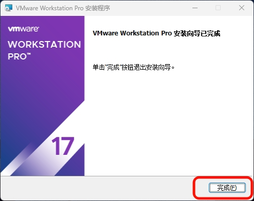
这样就安装完成了（电脑不同深色主题可能会对这个有影响，无伤大雅）。
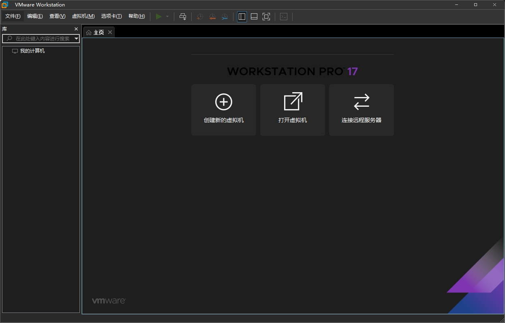